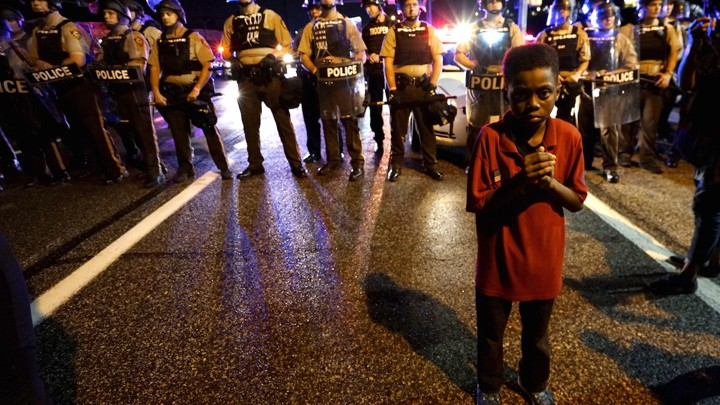

Racial Discrimination
1.African-Americans comprise only 13% of the U.S. population and 14% of the monthly drug users, but are 37% of the people arrested for drug-related offenses in America.
2.After being arrested, African-Americans are 33% more likely than whites to be detained while facing a felony trial in New York.
3.In 2010, the U.S. Sentencing Commission reported that African Americans receive 10% longer sentences than whites through the federal system for the same crimes.
4. Hispanics are the nation's largest minority group and among its fastest growing populations. According to the US Census Bureau (2013), the Hispanic population in 2012 was 53 million, making up 17% of the US population.
5. In 2011, Hispanics had the highest dropout rate (17%) for students ages 16 through 24.
6. Arizona passed a law authorizing local police to check the immigration status of anyone they reasonably suspect of being in the United States illegally.